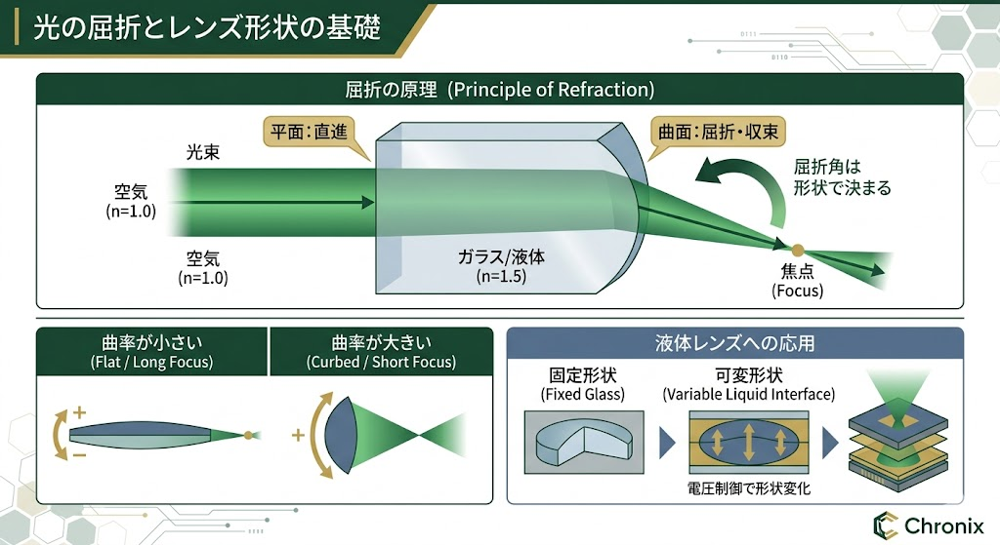
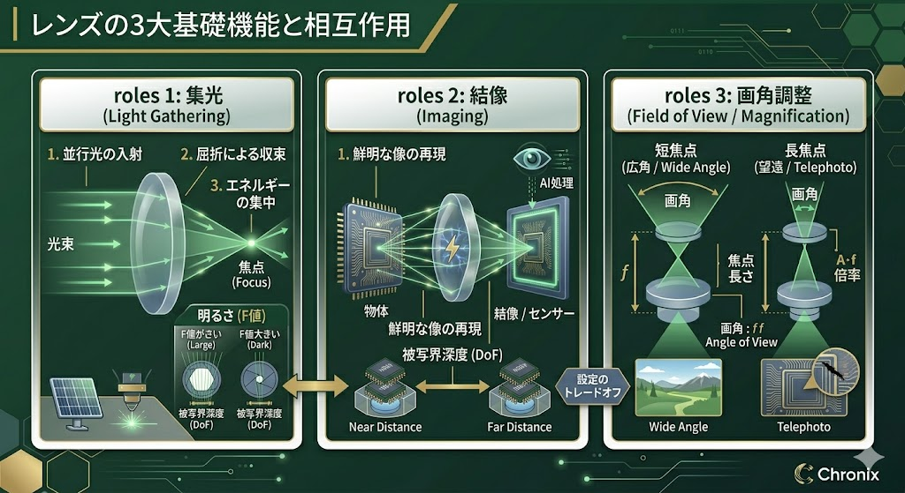

レンズの役割は、光を一点に集める（フォーカスする）ことです。光は異なる物質（空気とガラス、あるいは液体）の境界を通る際、その速度差によって進む方向が変わります。これが「屈折」です。
屈折する角度は、レンズ表面の「曲率（形状）」によって決まります。従来のレンズはガラスを削ってこの形状を固定しますが、液体レンズはこれを「動的」に変化させます。

レンズが膨らむほど、光は強く曲げられ、焦点距離は短くなります。
異なる屈折率を持つ2つの液体界面が、ガラスレンズの表面と同じ役割を果たします。
この「界面のカーブ」を電気的に制御するのがエレクトロウェッティング技術です。
レンズは「屈折」を利用して光の進む方向を自在に制御し、空間上の光情報を特定の点や面に再構成、あるいは整列させるデバイスです。その物理的な役割は、大きく分けて3つあります。
広範囲の平行光を屈折により一点（焦点）に集め、光のエネルギー密度を高める機能。
物体から放射された光を、再び対応する点へと収束させ、センサー上に元の形を再現する機能。
焦点距離や WD を変えることで、撮影される像の範囲（広角・望遠）や倍率を決定する機能。

図：レンズによる光束の制御（クリックで拡大）